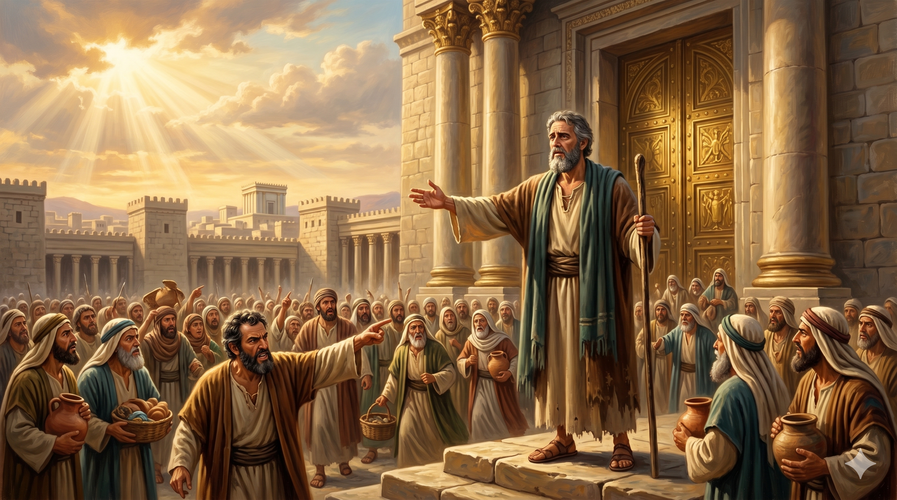
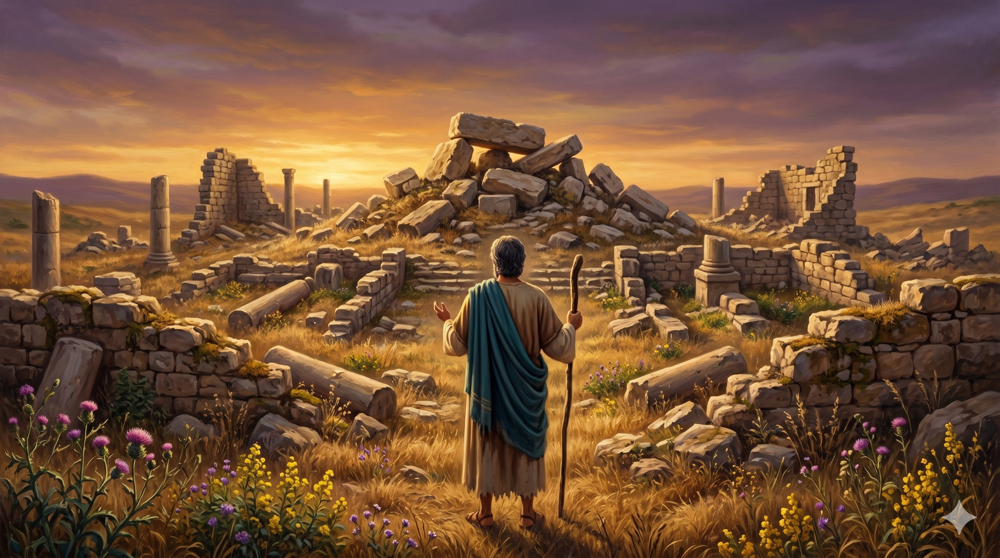

예레미야가 성전 문 어귀에 서서 무리에게 외치는 장면 — "여호와의 성전이라, 여호와의 성전이라" 외치는 백성들에게 맞서 참된 신앙과 삶의 변화를 요구하는 선지자의 고독한 설교. 성전을 둘러싼 군중과 홀로 선 예레미야의 대조
"너희는 이것이 여호와의 성전이라, 여호와의 성전이라, 여호와의 성전이라 하는 거짓말을 믿지 말라 너희가 만일 길과 행위를 참으로 바르게 하여 이웃들 사이에 공의를 행하며 이방인과 고아와 과부를 압제하지 아니하며 무죄한 자의 피를 이 곳에서 흘리지 아니하며 다른 신들을 따라 스스로 해롭게 하지 아니하면 내가 너희를 이 곳에 살게 하리니" — 예레미야 7:4-7
예레미야의 성전 설교는 그의 사역에서 가장 위험한 순간 중 하나였습니다. 성전 문 어귀에 서서 예배하러 들어오는 백성들에게 외쳐야 했기 때문입니다. 당시 유다 백성들은 "여호와의 성전"이라는 말을 부적처럼 반복하고 있었습니다. 성전이 있는 한 예루살렘은 무너지지 않는다고 믿었습니다. 그러나 예레미야는 그 믿음이 거짓이라고 선포합니다(7:4). 성전이 하나님의 임재를 보증하는 것이 아닙니다. 성전의 주인이신 하나님이 보증하시는 것입니다. 건물이 아니라 살아 계신 하나님께서 함께하셔야 성전은 의미가 있습니다.
하나님이 요구하시는 것은 분명합니다(7:5-6). 서로 간에 공의를 행하라, 이방인·고아·과부를 압제하지 말라, 무죄한 피를 흘리지 말라, 다른 신을 섬기지 말라. 이 조건들이 지켜질 때 하나님은 그 땅에 거하게 해 주시겠다고 약속하십니다. 그러나 백성들은 도둑질하고, 살인하고, 간음하고, 거짓 맹세하면서 다른 신들 앞에 분향하고, 그러고 나서 성전에 와서 "우리가 구원을 얻었다"고 합니다(7:9-10). 하나님은 그것을 "강도의 굴혈"이라 부르십니다(7:11). 예수님이 성전을 정화하실 때 인용하신 바로 이 구절입니다(마 21:13). 예레미야의 성전 설교는 천 년 뒤 예수님의 행동으로 그대로 반복됩니다.

실로의 폐허 — 한때 성막이 있었으나 이스라엘의 죄악으로 버려진 실로를 예레미야가 가리키며 경고하는 장면. "내가 실로에 행한 것 같이 이 성전에도 행하리라" (렘 7:14)
오늘날에도 "여호와의 성전이라"를 반복하는 형태는 달라졌지만 본질은 같습니다. 교회에 다닌다는 것, 세례를 받았다는 것, 직분이 있다는 것 — 이것들이 구원의 부적이 될 때 우리는 예레미야 시대의 유다와 다르지 않습니다. 하나님이 보시는 것은 간판이 아니라 삶입니다. 예배당 안에서의 열정이 문 밖에서의 삶과 일치하는지, 주일에 드리는 기도가 주중의 관계에서 열매를 맺는지가 중요합니다. 예레미야의 설교는 불편하지만, 그 불편함이 참된 믿음을 향한 출발점입니다.
예레미야는 이 설교 때문에 죽음의 위협을 받았습니다(렘 26:11). 그럼에도 그는 하나님의 말씀을 그대로 전했습니다. 참된 선지자의 특징은 사람들이 듣고 싶어하는 말이 아니라 하나님이 하고 싶으신 말을 전하는 것입니다. 우리도 마찬가지입니다. 주변의 시선이 아니라 하나님의 시선을 두려워하는 것, 사람을 기쁘게 하는 신앙이 아니라 하나님을 기쁘게 하는 신앙 — 그것이 예레미야가 성전 문에서 외친 메시지의 핵심입니다.
"여호와의 성전이라"를 외치면서 삶은 강도의 굴혈이 되어서는 안 됩니다.
하나님은 건물보다 당신의 삶을 보십니다.
예배당 문 밖의 당신은, 예배당 안의 당신과 같습니까?